Module 1 Statistics in modern biology
1.1 Overview
Science works by testing ideas to see if they line up with observations. In other words, checking the predictions of hypotheses against data. This process is called data analysis, because it involves careful examination of numerical patterns in observational or experimental data. The branch of mathematics concerned with analyzing data is called statistics. Statistics is vital to modern science in general, including biology.
This website and the course it supports is designed to introduce the ways that statistics are used in biology. This includes strategies for data analysis and an introduction to the open source program and language R. Specific tasks in the data analysis workflow (e.g., data manipulation) and specific analysis methods (e.g., generalized linear models) are covered on individual pages. This first module is a more general exploration of the role of statistics in modern biology, common statistical frameworks, and common misuses of statistics.
1.2 Statistics in modern biology
1.2.1 The scientific method
The famous astronomer and popularizer of science Carl Sagan used to say that, “Science is much more than a body of knowledge. It is a way of thinking.” This quote sums up the way that you, as an emerging scientist, should start to think about the way science works. As an undergraduate, you were (or are) primarily a consumer of scientific knowledge. As a graduate student you will start to become a producer of that knowledge. The key step in that transition is to start to view science as a method for finding answers rather than a set of subjects with answers to be memorized.
Biology, and science in general, depends on the scientific method. What is the scientific method? In school you probably learned about a series of discrete steps that goes something like this:
- Observation or question
- Hypothesis
- Experiment
- Conclusions
The reality is a little more complicated. A more realistic representation might be something like this (Voit 2019):
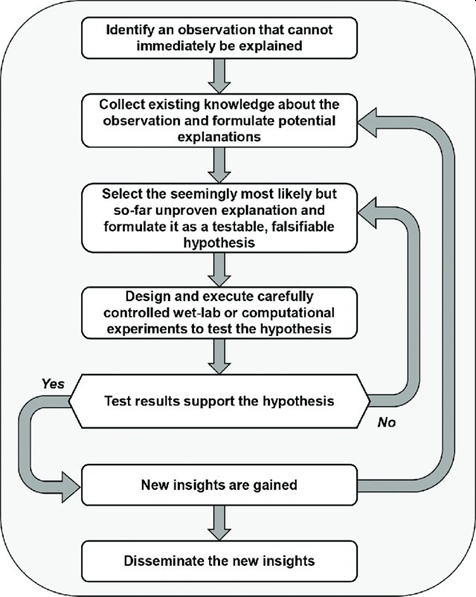
This model includes the key decision point Test results support the hypothesis. If this is the case, new insight has been gained which can be shared with the world and which should provoke new questions. If the test results do not support the hypothesis, then there is more work to do before any conclusions can be drawn. Namely, one hypothesis may have been eliminated, so an experiment must be devised to test another candidate explanation.
This course is about that decision process: determining whether biological data support a hypothesis or not. Every step before and after that decision point depends on your subject matter expertise as a biologist. The logic of the decision process itself, however, is in the realm of statistics. Being a biologist requires being able to use the tools of statistics to determine whether data support or refute a hypothesis. Even if you do not end up working as a biologist, a career in any knowledge field (scientific or otherwise) will be greatly enhanced by this ability.
Many biology majors, including myself as an undergraduate, seem to have a phobia of statistics and mathematics. That’s perfectly understandable. In some ways, biology and mathematics use very different mindsets. Biologists tend to revel in the gory details (literally) of anatomy, taxonomy, biochemistry, ecology, behavior, and genetics. These details are often taxon and even situation-specific. Mathematicians, on the other hand, spend a lot of effort trying to abstract those details away and discover general underlying patterns. But, as we will see this semester, as biologists we can benefit a lot from trying to express our ideas in terms of mathematics. Specifically, in the language of statistics, which is the discipline of applied mathematics that is concerned with measuring and interpreting data. The modern discipline of statistics was developed in large part to help answer the kinds of questions that scientists ask1. In other words, to help make the critical decision about whether test results support a hypothesis or not.
1.2.2 Example data analysis
Perhaps the best way to see how statistics are used in biology is to work through the process, paying special attention to how different statistical methods are used. The data and conclusions for this example are mostly fictitious, but the thought process is the same as for any good research project.
Imagine a study where researchers are interested in the effects of agricultural chemicals on turtle reproduction. This study is motivated by anecdotal evidence that baby turtles are not observed in ponds downstream from farms, prompting concern from a state fish and wildlife agency. The researchers hypothesize that a common herbicide, atrazine, acts as an estrogen-antagonist and thus interferes with the sexual maturation of male turtles.
The researchers performed two experiments:
- Experiment 1: 40 turtles are raised in the lab: 20 exposed to low levels of atrazine, and 20 not exposed to atrazine. Turtle eggs were incubated at 25 \(^\circ\)C, a temperature known to produce only male hatchlings. They then counted the number of male and female hatchlings.
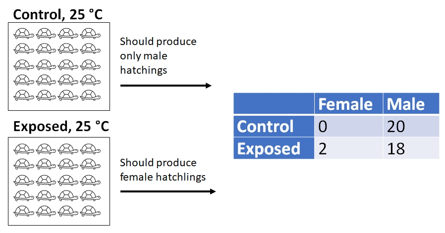
- Experiment 2: 30 ponds are surveyed for turtle nests. The number of nests at each pond and eggs in each nest are counted. Surrounding land use and other environmental variables are also recorded.
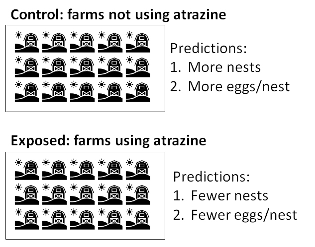
In experiment 1, at the incubation temperature of 25 \(^\circ\)C, all embryos should have developed into male hatchlings. The actual results were:
| Female | Male | |
|---|---|---|
| Control | 0 | 20 |
| Exposed | 2 | 18 |
The researchers performed a \(\chi^2\) test and found that the proportion of hatchlings that were male did not differ significantly between the control and exposed treatments (\(\chi^2\)=0.526, 1 d.f., P = 0.4682). From this they concluded that atrazine does not interfere substantially with male turtle development2.
In experiment 2, researchers found that ponds near farms tended to have fewer turtle nests. Their data are shown graphically below. The researchers compared the mean number of nests in the farm vs. non-farm ponds and found that, on average, ponds surrounded by farms tended to have about 2.86 fewer nests (95% confidence interval of difference = [1.46, 4.38]). A t-test found that this difference was statistically significant (t = 4.1737, 27.253 d.f., P = 0.0002). When the researchers compared the number of eggs per nest, they found no difference in mean eggs per nest between pond types (t = 0, 27.253 d.f., P > 0.9999).

So, what can the researchers conclude? From experiment 2, they can conclude that something about being surrounded by farms appears to reduce the number of turtle nests in the ponds, but does not affect the number of eggs per nest. From experiment 1, they can also conclude that atrazine by itself does not appear to affect development of male turtles.
Notice that in the investigation described above, the researchers did not obtain a definitive answer to their question from any single test. Instead, they used their working hypothesis (proposed explanation) to deduce several predictions of results they should have observed if their hypothesis was correct. Here is the thought process more explicitly:
- Hypothesis: Atrazine interferes with the sexual maturation of male turtles because it acts as an estrogen-antagonist.
- Deduction 1: If atrazine interferes with an embryo’s estrogen receptors, that embryo should not be able to develop as a male. If individual embryos cannot develop as male, then a group of embryos exposed to atrazine should all develop as female.
- Specific prediction based on deduction 1: A greater proportion of eggs will develop into females in the experimental group exposed to atrazine than in the group not exposed to atrazine.
- Deduction 2: If atrazine reduces turtle reproductive output, then turtle populations exposed to atrazine should have lower reproductive success.
- Specific prediction based on deduction 2: Habitats surrounded by agricultural fields (and thus exposed to atrazine) should have fewer turtle nests than habitats surrounded by other land use types (and thus not exposed to atrazine).
- Another specific prediction based on deduction 2: Turtle nests in habitats surrounded by agricultural fields (and thus exposed to atrazine) should have fewer eggs than nests in habitats surrounded by other land use types (and thus not exposed to atrazine).
- Deduction 1: If atrazine interferes with an embryo’s estrogen receptors, that embryo should not be able to develop as a male. If individual embryos cannot develop as male, then a group of embryos exposed to atrazine should all develop as female.
The \(\chi^2\) test was used to evaluate the specific prediction based on deduction 1, because the researchers were comparing proportions. The t-tests were used to test the specific predictions of deduction 2, because the researchers were comparing means. What were the results? The table below lays the results out:
| Prediction | Correct? |
|---|---|
| Exposed eggs all develop as female | No |
| Fewer nests in agricultural landscapes | Yes |
| Fewer eggs/nest in agricultural landscapes | No |
So, what should the researchers conclude? The results suggest that whatever is happening between agricultural fields and turtle nests, it does not appear that pesticides are hampering turtle reproduction. This is seen in the lack of effect of the chemical in experiment 1, and the lack of a relationship between eggs per nest and agricultural land. However, the researchers can’t rule out that something about agriculture reduces the likelihood that turtles will build nests. If you were in their position, what would you investigate next?
1.3 Misuses of statistics
There are too many ways to misuse statistics, both intentionally and accidentally, to cover here. In this course we’ll explore a few examples that are closely related to this lesson’s main ideas. In my experience, there are 4 common ways in which biologists misuse statistics (intentionally or not):
- Proving the trivial
- Inappropriate methods
- P-value abuse
- Inadequate sample size
Let’s examine each in turn.
1.3.1 “Proving” the trivial and meaningless hypotheses
As valuable as statistics are, it can be tempting to use them too much. Sometimes we do this from an abundance of caution–after all, we want to be sure about the conclusions we draw! However, there is such a thing as too cautious. For example, consider the two versions of a statement below from a fictional article about the effects of forestry practices on soil nitrogen fixation in a national forest:
Version 1:
All trees were removed by clearcutting between 2 and 4 June 2021.
Version 2:
Aboveground woody plant stem count was reduced by 63.1 \(\pm\) 3.8 trees ha-1 days-1 (95% CI = [61.5, 64.9] trees ha-1 days-1); this effect was statistically significant (t = 77.56, 19 d.f., P < 0.0001).
Both statements convey essentially the same information. There were some trees in the forest, then trees were removed by clear-cutting, then there were no trees.
The first statement is just fine. The second statement is also fine, in the sense that it is true and because it includes a perfectly legitimate t-test. But, the test reported in the second statement is of a completely trivial question. Of course there were fewer trees after clear-cutting…that’s what clear-cutting means! The additional verbiage adds no real information to the paper because the paper wasn’t about aboveground woody biomass, but rather about soil N fixation. The reviewers (or editors) would be justified in requiring the removal or shortening of the second statement.
Including unnecessary statistical tests can be tempting in situations where there aren’t many significant test results. For example, if your study produces no significant statistical differences related to your main hypothesis, or a marginal effect that is hard to interpret. Padding the manuscript with additional P-values <0.05 can make the work feel more legitimate and on less shaky ground. Resist this temptation.
The logic of null hypothesis significance testing (NHST; see below) sometimes requires us to consider, at least statistically, hypotheses that we know to be false. One such example involves simulation: when data are simulated, it is meaningless to test whether or not two simulations with different parameters were “significantly different” because they are known to be different. Consider the example below (Green et al. 2021):
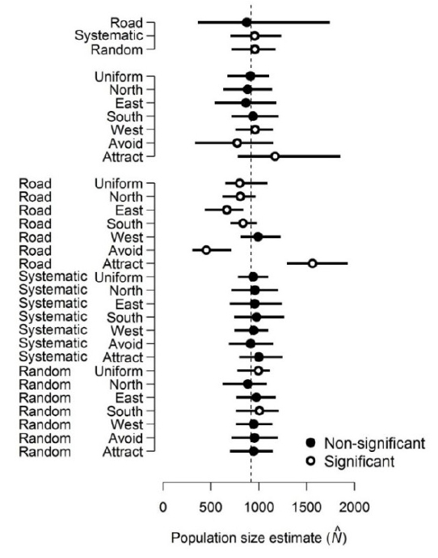
In this study, researchers simulated deer populations and the results of surveying those deer using different survey methods. They then used analysis of variance (ANOVA) to compare the mean population estimates resulting from different methods. Their goal was not to determine whether the population estimates were different between different methods. The estimates were known to be different, because the data were simulated in the first place! What they were trying to do was partition the variance; i.e., measure how much of the difference in estimated population size was attributable to survey method (White et al. 2014). If you are conducting a simulation study, remember that the literal null hypothesis of your statistical test is likely meaningless, or at least, known a priori to be false.
1.3.2 Inappropriate methods
Another very common misuse of statistics is simply using statistics incorrectly. Many of these mistakes can be mitigated by better understanding of the methods. In other words, researchers should read the manual. I also like to call this a “problem between chair and keyboard” error3.
1.3.2.1 Common mistake 1: Mischaracterizing a variable
When you perform a statistical test, the variables must have a well-defined type. Some variables are continuous, others are discrete but numerical, and others are categorical. If a variable is treated as the wrong type, it can produce meaningless statistical results. Consider the example below in which the researchers investigated the length of flower petals across 3 species of flower:
iris$x <- as.numeric(iris$Species)
summary(lm(Petal.Length~x, data=iris))##
## Call:
## lm(formula = Petal.Length ~ x, data = iris)
##
## Residuals:
## Min 1Q Median 3Q Max
## -1.303 -0.313 -0.113 0.342 1.342
##
## Coefficients:
## Estimate Std. Error t value Pr(>|t|)
## (Intercept) -0.33200 0.12060 -2.753 0.00664 **
## x 2.04500 0.05582 36.632 < 2e-16 ***
## ---
## Signif. codes: 0 '***' 0.001 '**' 0.01 '*' 0.05 '.' 0.1 ' ' 1
##
## Residual standard error: 0.5582 on 148 degrees of freedom
## Multiple R-squared: 0.9007, Adjusted R-squared: 0.9
## F-statistic: 1342 on 1 and 148 DF, p-value: < 2.2e-16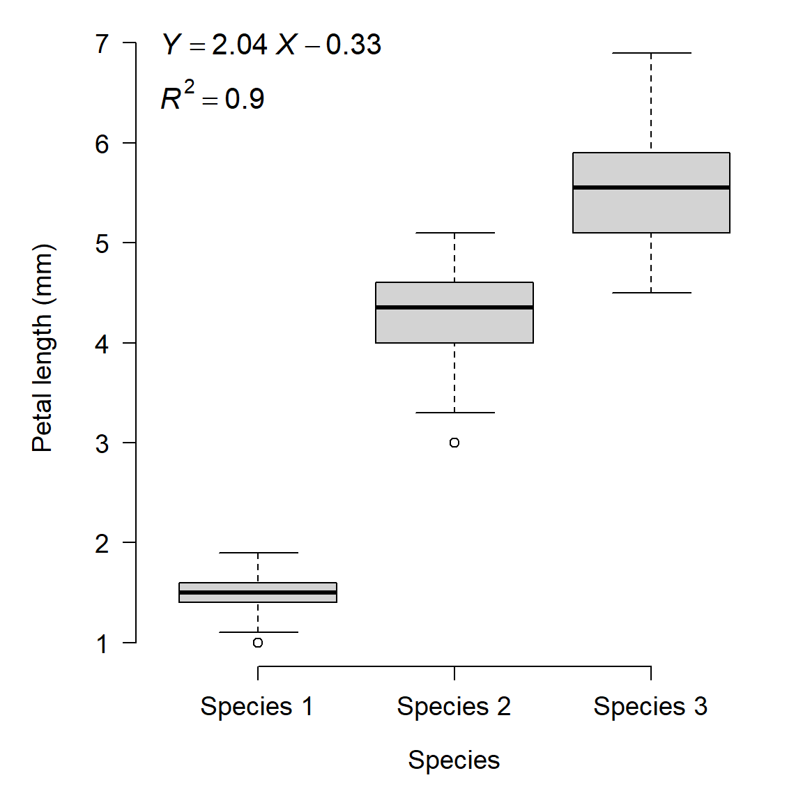
See the problem? The dependent variable is modeled as a linear function of the species’ identities: literally the numbers 1, 2, and 3. The category labels (species) were treated as numeric values. While the plot shows some clear differences between the species, what if the species had been labeled differently? There is a correct way to analyze these data, but it is not linear regression4.
1.3.2.2 Common mistake 2: Overfitting
Overfitting is when a statistical model is fit with more variables than the data can justify. Generally, a model is overfit when random noise is modeled as if it was part of the deterministic part of the model. Most statistical models have a deterministic part and a stochastic part. The deterministic part predicts the “average” or expected value of the response variable as some function of the explanatory variables. It usually takes the form of an equation (or set of equations). The stochastic part of the model describes how observations vary from the expected value predicted by the deterministic part. The stochastic part usually includes one of more probability distributions. We’ll discuss common probability distributions in a later module.
The figure below shows the relationship between the deterministic part and stochastic part of a common statistical model, the linear model.
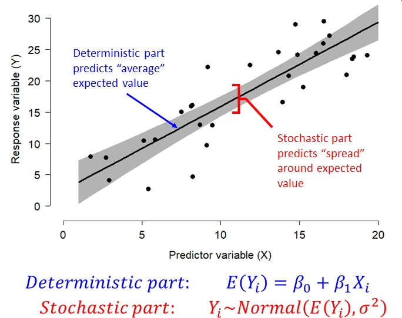
Using computers, it is easy to fit equations to data. In most software it is trivial to add predictor variables to a model until all of the variance is explained (i.e., R2 = 1). However, this is usually not a good idea. There is always random noise in any dataset, and the appropriate strategy is always to model that noise rather than try to explain it deterministically. This is because some of that noise is unique to the specific entities or samples that are being sampled. Modeling the noise that is specific to a particular study as if it was representative of all potential studies makes an analysis too parochial to be generally applicable.
Consider the example below. In this plot, 12 data points were generated using a linear model (Y ~ X) with normally distributed residuals. Then, various regression models were fit to the data. Each model contained one more term than the last:
\[\begin{matrix}Linear\ model&Y=\beta_0+\beta_1X\\Quadratic\ model&Y=\beta_0+\beta_1X+\beta_2X^2\\Cubic\ model&Y=\beta_0+\beta_1X+\beta_2X^2+\beta_3X^3\\Quartic\ model&Y=\beta_0+\beta_1X+\beta_2X^2+\beta_3X^3+\beta_4X^4\\Quintic\ model&Y=\beta_0+\beta_1X+\beta_2X^2+\beta_3X^3+\beta_4X^4+\beta_5X^5\\Sextic\ model&Y=\beta_0+\beta_1X+\beta_2X^2+\beta_3X^3+\beta_4X^4+\beta_5X^5+\beta_6X^6\\\end{matrix}\]
In this figure, the model prediction and 95% confidence interval (CI) are shown as a red line and red shaded area. The model residuals are shown as blue lines. The original data are shown as black points.
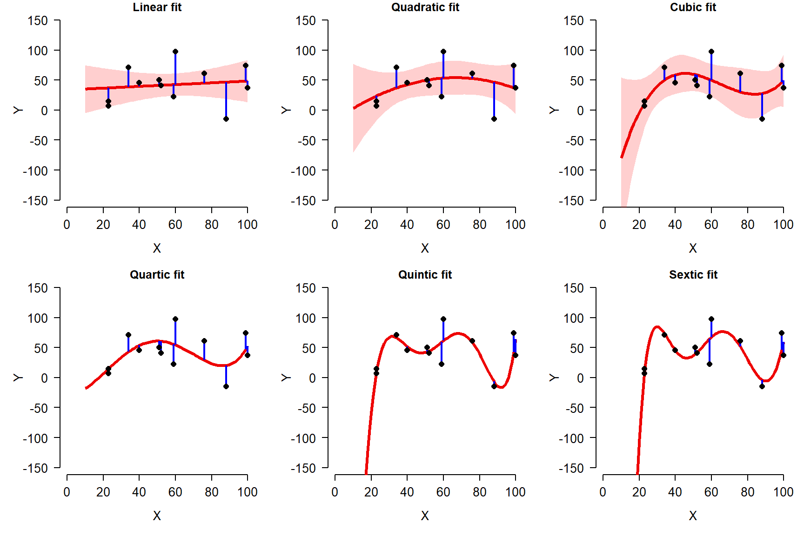
Notice that the as the model includes more terms, the fit improves. This can be seen because the residuals are generally getting smaller and the predicted values are getting closer to the observed values.
The figure below shows how the fit improved as more terms were added. This figure shows how root mean squared error (RMSE), a measure of model predictive ability, decreases with increasing model complexity.
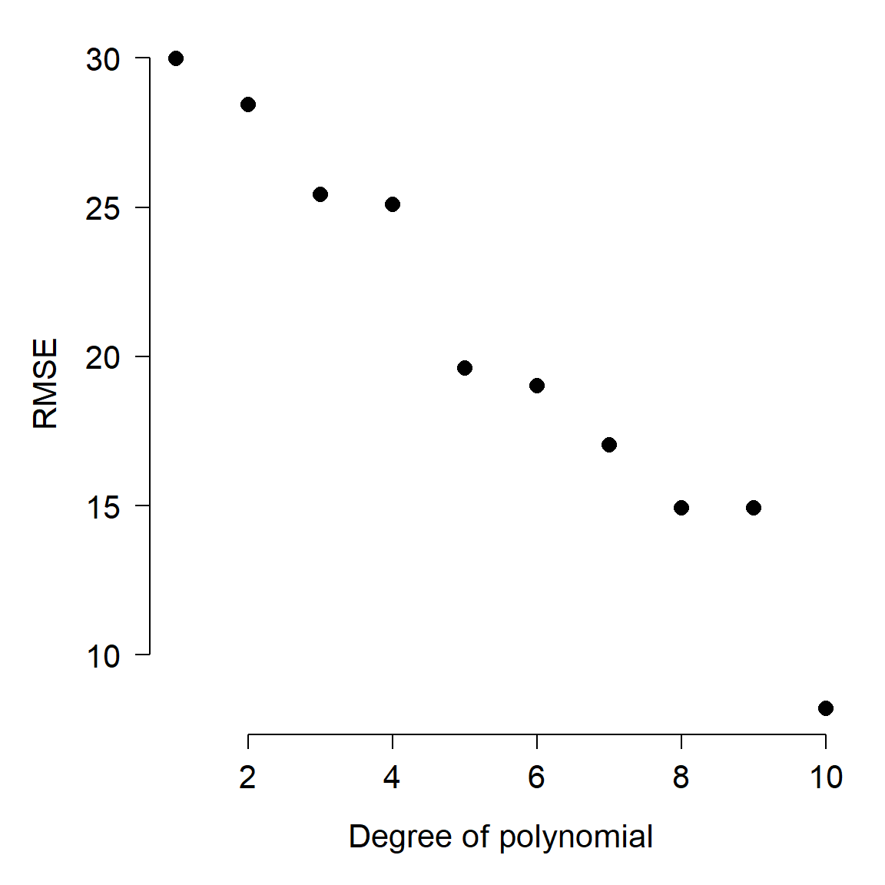
Notice what happens as the curves pass through more and more of the points: for X values other than the input points, the curves vary wildly. What’s going on here is that the higher-order polynomials are forcing the curves through each point, at the expense of reasonableness between the points. In fact, for any dataset with n observations, you can obtain a perfect fit to the points with a polynomial curve of order n. But, such a curve is highly unlikely to be reasonable because it is not likely to be very applicable to other data. In other words, the model includes terms that are fitting random noise, but do not have general applicability.
A simpler model with fewer terms, and thus greater variance between the data and their predicted values, would likely have more predictive power for new data. Thus, the simpler model might be a better representation of the underlying process. In data science this phenomenon is often called the bias-variance trade-off because in general it’s easy to minimize prediction error on the training data (“variance”) but at the cost of decreasing prediction error on new observations (“bias”). This is because some of the variation in the training data is actually random noise and thus fitting the model to explain it is really explaining nothing.
1.3.3 P-hacking and data dredging
The third misuse of statistics that we’ll explore here is that of searching for significant P-values, and worrying later whether or not the tests make sense. P-hacking refers to massaging or adjusting an analysis to produce a P-value <0.05. This can take many forms: post hoc rationalizations for removing certain observations, reframing a question, dropping categories or levels of a factor, and so on. Data dredging is a similar kind of practice where a researcher compares many variables or performs many tests, and builds a story out of the tests with P < 0.05. Both of these activities can produce interesting results, but the results might not be very meaningful.
The problems with P-hacking are legion, but I’ll just point out two.
- P-hacking allows the researcher to commit scientific misconduct, whether intentionally or not. Your objective should be to find the correct answer, not to minimize a P-value.
- P-hacking sets you up to commit what’s called the Texas Sharpshooter Fallacy. This name evokes the story of a (Texan) gunman shooting a barn, then drawing targets around the bullet holes to make it look like he hit his targets. Another expression that describes this is, “Hypothesizing after results known,” or HARK.
Data dredging has all of the same problems as P-hacking, but arrives at them a different way. Whereas a P-hacker adjusts the analysis until the P-value is significant, a data dredger just keeps trying new variables until one of them hits. This approach is perhaps best summarized in the following comic5, although Head et al. (2015) provide a more rigorous treatment.

1.3.4 Inadequate sample sizes and pseudoreplication
1.3.4.1 Sample sizes and statistical power
Size matters in biology (Smith and Lyons 2013). Size also matters in statistics (Makin and Xivry 2019). As we’ll see in the next section, the number of observations in a study can have a large impact on whether or not a pattern is detected in the data. Generally, studies with greater sample sizes can detect smaller effects. Put another way, studies with greater sample sizes are more likely to detect an effect of a given magnitude. On the other hand, studies with smaller sample sizes are less likely to detect an effect. Both of these situations present their own kinds of problems, summarized in the table below.
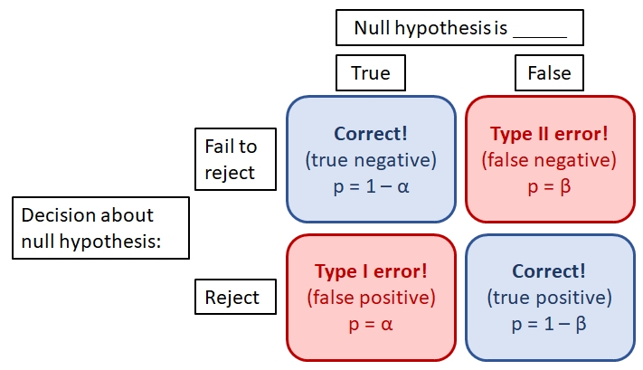
Ideally we should reject the null hypothesis when it is false, and fail to reject it when it is true. However, data always have some element of randomness in them and thus we can never be perfectly sure that the conclusions of a test are correct. Statisticians have thought about this problem a lot and boiled it down to two probabilities: \(\alpha\) and \(\beta\).
- \(\alpha\) is the type I error rate, the probability of rejecting the null hypothesis when it is true.
- \(\beta\) is the type II error rate, the probability of failing to reject the null hypothesis when it is false.
There is a trade-off between the two error probabilities: decreasing one usually increases the other. By convention, \(\alpha\) is usually set to 5% (0.05). P-values are compared to this value \(\alpha\): if \(P \ge \alpha\), then we “fail to reject” the null hypothesis. If P < \(\alpha\), then we reject the null hypothesis with the understanding that P is the probability of a type I error.
What does all of this have to do with sample size? That probability that a test will correctly reject a false null hypothesis, \(1-\beta\), is known as the power of a test. The power of a test tends to increase with larger \(\alpha\), greater sample size, and larger effect size. The R commands below demonstrate this:
set.seed(123)
# type II error:
x1 <- rnorm(10, 5, 2)
x2 <- rnorm(10, 5.2, 2)
t.test(x1, x2)##
## Welch Two Sample t-test
##
## data: x1 and x2
## t = -0.5249, df = 17.872, p-value = 0.6061
## alternative hypothesis: true difference in means is not equal to 0
## 95 percent confidence interval:
## -2.342098 1.406112
## sample estimates:
## mean of x mean of y
## 5.149251 5.617244# larger sample size:
x3 <- rnorm(1000, 5, 2)
x4 <- rnorm(1000, 5.2, 2)
t.test(x3,x4)##
## Welch Two Sample t-test
##
## data: x3 and x4
## t = -2.6522, df = 1998, p-value = 0.008059
## alternative hypothesis: true difference in means is not equal to 0
## 95 percent confidence interval:
## -0.41274937 -0.06182918
## sample estimates:
## mean of x mean of y
## 5.036722 5.274011# larger effect size:
x5 <- rnorm(10, 5, 2)
x6 <- rnorm(10, 10, 2)
t.test(x5, x6)##
## Welch Two Sample t-test
##
## data: x5 and x6
## t = -5.4059, df = 16.404, p-value = 5.348e-05
## alternative hypothesis: true difference in means is not equal to 0
## 95 percent confidence interval:
## -6.524121 -2.853887
## sample estimates:
## mean of x mean of y
## 5.522159 10.211163In practical terms, this means that conducting a test with too few observations can make it more likely that you will fail to detect a pattern that is really there: a type II error. This happens all the time in biology, and it can be devastating to a research program. To reduce the chances that it happens to you, consider these steps:
- Increase your sample size. When in doubt, increase your sample size.
- Decrease sources of variation that you can control. Any extraneous variation caused by experimental errors, sloppy technique, improperly trained lab assistants, etc., will reduce the power of your test.
- Conduct a power analysis. Power analysis is a set of techniques for estimating the probability of detecting an effect given sample size, effect size, and other factors. It works best when you have some pilot data or comparable data from literature. Power analysis is extremely useful for answering questions like, “How many samples should I collect?” or “What is the relative benefit of collecting 10 more samples or 20 more samples?”. Power analyses for simple methods like t-tests or ANOVA are very straightforward; more complex methods may require simulation.
1.3.4.2 Pseudoreplication
Psuedoreplication is a situation where samples are treated as independent when they are not (Hurlbert 1984). This leads to an analysis where the sample size is artificially inflated, and thus the analysis has greater apparent power than it actually does. Pseudoreplication is essentially the opposite problem as inadequate sample size: rather than having fewer observations than needed to do the analysis, the researcher does the analysis as if they have more observations than they really do. The seminal paper on this topic in ecology is Hurlbert (1984)..
To understand pseudoreplication, it’s important to keep in mind the difference between an observation and a degree of freedom. Degrees of freedom can be thought of as independent pieces of information. Ideally, each observation contributes information to the dataset and so a dataset contains as many pieces of information as it does observations. In statistics, however, we find that this not possible. Every time we calculate a summary statistic or estimate a model parameter, we use information from the dataset. If we know the data and know a statistic such as the mean, then some of the information must be in the statistic and not the dataset. For example, if you have 10 values and calculate the mean, the mean is considered to be known with 9 degrees of freedom. This is because if you know the mean, 9 of the values are free to vary without taking away your ability to calculate the 10th value given those 9 values and the mean. The R code below illustrates this:
set.seed(123)
a <- sample(1:10, 10, replace=TRUE)
a## [1] 3 3 10 2 6 5 4 6 9 10(mean(a)*length(a))-sum(a[1:9]) == a[10]## [1] TRUEPsuedoreplication often occurs when researchers consider multiple measurements from the same sampling unit as different observations. For example, if an ecologist measures tree diameters from multiple trees within 20 m of each other. Or, a microbiologist measures cell counts from multiple assays of the same culture tube. In both cases, there is strong reason to suspect that the multiple values are not independent of each other. In fact, it might be more appropriate to take the average of the multiple values and treat them as a single value (a “measure twice, cut once” approach).
Pseudoreplication can be a serious issue in investigations because most statistical models (e.g., ANOVA) assume that treatments are replicated. This means that each treatment is applied to multiple experimental units (i.e., samples). Applying a treatment or condition to multiple samples allows estimation of variability within a treatment. This variability must be separated from variability between treatments in order for a researcher to be able to infer how much variation is caused by the treatments.
For example, imagine a drug trial where Drug A and Drug B are each given to one person. This trial cannot distinguish whether Drug A or Drug B is more effective, because there is no way to know whether any difference in outcome between the two subjects is due to the drugs or due to differences between people. But, if Drug A and Drug B were each tried on 100 people, the variability among the 100 people who received Drug A and among the 100 people who receive Drug B could be compared to the variability between people who received Drug A or Drug B. This would allow the researchers to make some inferences about how effective each drug was.
The best strategy for mitigating pseudoreplication is to avoid it. This requires thinking very carefully about your experimental design and about what the experimental units (i.e., samples) really are. Avoiding pseudoreplication often involves some degree of randomization, in order to break any connection between potentially confounding variables.
If avoiding pseudoreplication is not possible, then you need to account for it. One way is to take steps to mitigate confounding variables. For example, you could rearrange plants in a growth chamber each day so that any effects of location within the chamber would be minimized. Another way is to acknowledge pseudoreplication in your analysis. Some methods such as mixed effects models or autocorrelation structures can account for some pseudoreplication (but you need to be very careful about doing this and very explicit about what you did). Finally, you can be open about the limitations of your study and present your findings as preliminary, or as not conclusive. Note that this strategy, while certainly ego-deflating, does not mean that your work is invalid. Openness and honesty are vital parts of the scientific process. What would be invalid would be ignoring any pseudoreplication in your study and overstating the validity of your results.
Hurlbert (1984) defined four kinds of pseudoreplication: simple, temporal, sacrificial, and implicit. The first 3 is shown in the figure below.
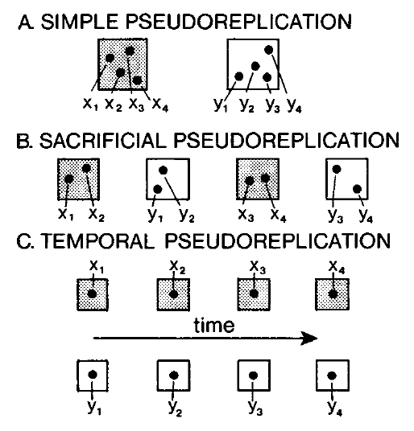
1.3.4.2.1 Simple pseudoreplication
Simple pseudoreplication occurs when there is one experimental unit, or replicate, per treatment, regardless of how many samples are taken within each replicate. When this occurs, variability between replicates cannot be separated from variation between treatments.
Example
Barney is interested in the effects of forest management practices on soil microbes. He visits two forest sites: Site A is burned regularly, and Site B is unmanaged. Barney uses a GIS to randomly identify a 1 ha plot within each site. He then visits each site and takes 20 soil samples from the randomly selected plot. Barney then measures the metabolic profile of each soil microbe sample (n = 40) and compares the 20 samples from the burned plot to the 20 samples from the unburned plot.
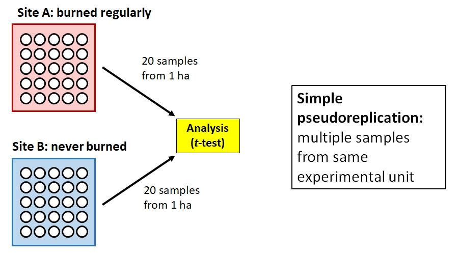
The problem here is that Barney might actually only have 2 samples: one from the burned plot, and one from the unburned plot. If the plots are relatively homogenous, then we should expect their microbiota to be similar simply because of their proximity and shared environment. So, the proper experimental unit is the plot, not the soil sample. Barney has collected a dataset with simple pseudoreplication because he confused taking multiple measurements within an experimental unit with taking measurements at multiple experimental units. In other words, his “replicates” are not true replicates. Barney’s thesis advisor tells him to sample more sites and to investigate mixed models and block designs for his analysis.
1.3.4.2.2 Temporal pseudoreplication
Temporal pseudoreplication occurs when multiple samples from an experimental unit are taken over time and then treated as statistically independent. Because successive samples from the same experimental unit are likely to be correlated with each other, they cannot be treated as independent.
Example
Betty is interested in the effects of a new sugar substitute on the growth of gut bacteria. She inoculates 10 plates with E. coli bacteria and gives the new sweetener to 5 of them. She then counts the number of colony forming units (CFU) on each plate at 1, 2, 3, and 4 days after exposure. Betty analyzes her data using a t-test, with 20 exposed samples (5 plates \(\times\) 4 sampling occasions) and 20 control samples.
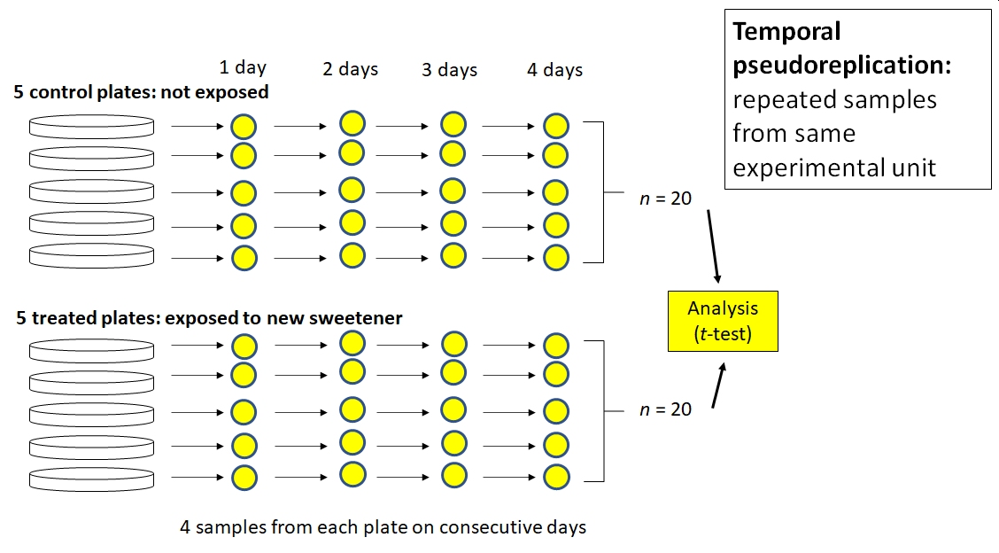
Betty’s problem is like Barney’s problem, but with time instead of space. The subsequent samples from each plate are not independent of each other. For example, the number of CFU in plate A at 2 days was at least partially dependent on the number of CFU in plate A at 1 day. Using consecutive samples from the same plates does not increase the number of samples in a test of the effect of the sweetener. Instead, Betty introduced a new variable, time, into the system that added variation instead of increasing sample size. She could account for the temporal pseudoreplication in her analysis by including time as a covariate or using some sort of autocorrelation structure. If she does not include time in her analysis, however, she’s going to have a bad time.
1.3.4.2.3 Sacrificial pseudoreplication
Sacrificial pseudoreplication occurs when data for replicates are pooled prior to analysis, or where two or more observations from the same experimental unit are treated as independent replicates. The term “sacrificial” comes from the fact that information about variation among replicates is confounded with variation among samples within replicates, and thus “lost”.
Example
Fred is studying the onset of estrus in female cotton rats (Sigmodon hispidus) and suspects that it may be driven by exposure to a compound produced by certain grasses in the spring. He places 80 female rats in 40 cages (2 per cage). Rats in 40 cages are fed ordinary rodent chow, while the rates in the other cages are fed chow supplemented with the suspect compound. Rats are checked each day for signs of estrus. Clearly, each treatment (control vs. supplemented) is replicated. How many times? Fred tells his advisor that each treatment is replicated 40 times, because 40 rats received each treatment.
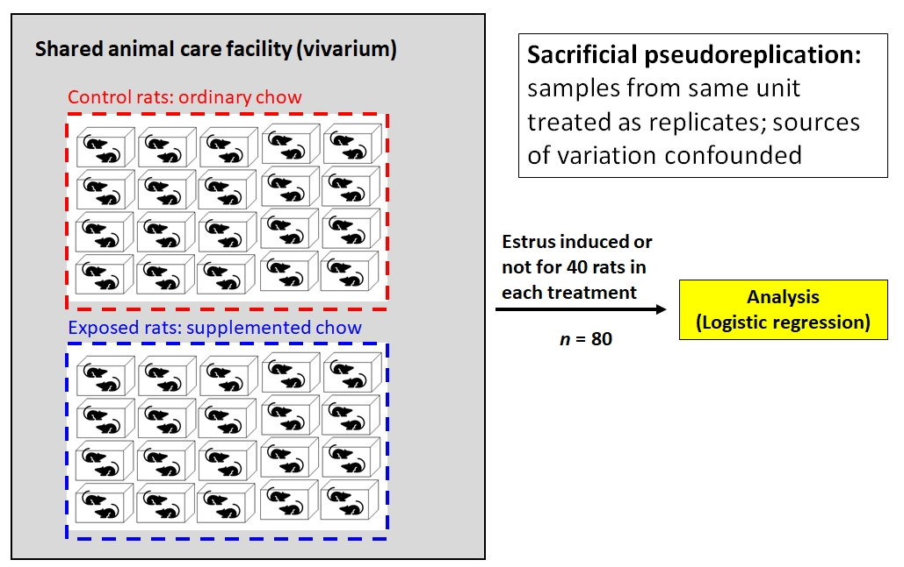
Not so fast. Mammalogists know that estrus can be induced in female rodents by exposure to airborne chemical cues (pheromones) from other females already in estrus. So, if there are two females in one cage and one goes into estrus (no matter the reason), the other animal might go into estrus in response the first animal’s pheromones and not at all in response to its diet. This means that the two animals in each cage cannot be considered statistically independent. So, Fred has at most 20 replicates of each treatment, not 40.
But it gets worse for Fred. The vivarium is old and cramped and poorly ventilated. All 40 cages are kept on a single shelving unit in a single room, and the air always smells like fouled rodent cages. Are the 40 cages really independent of each other, if chemical signals can waft between cages? So, depending on the ventilation in the room, Fred might have 0 replicates because none of the animals are statistically independent of each other. Fred’s thesis defense does not go well.
1.3.4.2.4 Implicit pseudoreplication
The last kind of pseudoreplication, implicit pseudoreplication, occurs when researchers present means and standard errors (SE) (or 95% CI) for observations within experimental units. Doing so implicitly tests for a difference between units, effectively getting a significance test for free without actually performing one! Meaningful means and SE should be calculated between experimental units, not within units. Variability within experimental units should be expressed using standard deviation, not standard error.
Example
Wilma is studying soil nutrient content in forests under different climate change scenarios. She grows 5 pine tree seedlings in growth chamber A under atmospheric CO2 (400 ppm) and 5 seedlings in growth chamber B under elevated CO2 (600 ppm). She then calculates the mean and SE of soil N content from the 5 seedlings in each chamber. In chamber A, soil N concentration was 1.89 \(\pm\) 0.34 SE g/kg; in chamber B, N concentration was 3.72 \(\pm\) 0.14 g/kg. Because the mean soil N concentration was greater in chamber B, and the means \(\pm\) SE did not overlap, she concluded that growing pine seedlings in elevated CO2 increased soil N concentration.
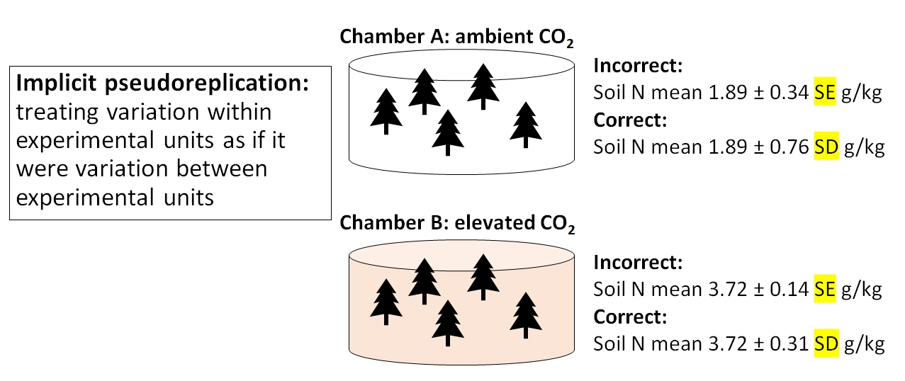
Not quite. Wilma summarized the uncertainty surrounding soil N measurements, which was a good idea. But, she presented the uncertainty as standard error, not standard deviation. Variation within each chamber should be calculated as SD. The SE would be appropriate for describing uncertainty about the difference in means between chambers. By presenting SE instead of SD, Wilma made it look like there was much less variability within treatments than there really was. As a rule, you should always calculate SD. SE usually comes up as part of the results of a statistical test.
1.3.4.3 Sample size and pseudoreplication summary
The problems related to statistical power are not new in biology. Button et al. (2013) reviewed some causes and consequences of low power in neuroscience. Lazic et al. (2018) describe some of the difficulties with defining sample sizes in cell culture and animal studies, and the resulting issue of pseudoreplication. In ecology and environmental biology, Hurlbert (1984) is the seminal reference on sample size and pseudoreplication.
1.4 P-values and null hypothesis significance testing (NHST)
1.4.1 Definition
When scientists design experiments, they are testing one or more hypotheses: proposed explanations for a phenomenon. Contrary to population belief, the statistical analysis of experimental results usually does not address the researchers’ hypotheses directly. Instead, statistical analysis of experimental results focuses on comparing experimental results to the results that might have occurred if there was no effect of the factor under investigation. Some terms that you need to understand:
- Hypothesis: proposed explanation of a phenomenon
- Null hypothesis: default assumption that some effect (or quantity, or relationship, etc.) is zero and does not affect the experimental results
- Alternative hypothesis: assumption that the null hypothesis is false
In (slightly) more concrete terms, if researchers want to test the hypothesis that some factor X has an effect on measurement Y, then they set up an experiment comparing observations of Y across different values of X. They would then have the following set up:
- Null hypothesis: Factor X does not affect Y.
- Alternative hypothesis: Factor X does affect Y
Notice that in NHST the alternative hypothesis is the logical negation of the null hypothesis, not a statement about another variable altogether (e.g., “Factor Z affects Y”). This is an easy mistake to make and one of the weaknesses of NHST: the word “hypothesis” in the phrase “null hypothesis” is not being used in the sense that scientists usually use it. This unfortunate choice of vocabulary is responsible for generations of confusion among researchers6.
In order to test their “alternative hypothesis”, what researchers usually do is test the null hypothesis. Statistical evidence that the null hypothesis can be rejected is then taken as evidence in favor of the alternative hypothesis. The null hypothesis is usually translated to a prediction like one of the following:
- The mean of Y is the same for all levels of X.
- The mean of Y does not differ between observations exposed to X and observations not exposed to X.
- Outcome Y is equally likely to occur when X occurs as it is when X does not occur.
- Rank order of Y values does not differ between levels of X.
Notice that all these predictions have something in common: Y is independent of X. That’s what the null hypothesis means. To test the predictions of the null hypothesis, we need a way to calculate what the data might have looked like if the null hypothesis was correct. Once we calculate that, we can compare the data to those calculations to see how “unlikely” the actual data were. Data that are sufficiently unlikely under the assumption that the null hypothesis is correct—a “significant difference”—are a kind of evidence that the null hypothesis is false7.
This kind of analysis is referred to as Null Hypothesis Significance Testing (NHST) and is one of the most important paradigms in modern science. Whether or not this is a good thing is a subject of fierce debate among scientists, statisticians, and philosophers of science. For better or worse, NHST is all but the de facto standard of inference in scientific publishing, so regardless of its merits in your particular case you will need to be able to use it. The purpose of this course module is to encourage you to use it correctly.
1.4.2 History and status of P-values
The P-value is a statistical statement about the likelihood of observing a pattern in data when the null hypothesis is true. They were first developed in the 1700s, and eventually popularized by the statistician R.A. Fisher in the 1920s. In Fisher’s formulation, the P-value was only meant as a “rule-of-thumb” or heuristic for determining whether the null hypothesis could be safely rejected. His original publications did not imply that rejecting the null hypothesis should automatically imply acceptance of the alternative hypothesis, or offer any justification for particular cut-offs or critical values of P. These ideas came later. Fisher suggested a critical P-value of 0.05 for convenience, but did not prescribe its use. In fact, he also suggested using other cut-offs, and even using the P-value itself as a measure of support for a hypothesis. The adoption of 0.05 as a threshold for significance proved popular, and has been taken as a kind of gospel for generations of researchers ever since.
In my opinion, the ubiquity of P-values on scientific research illustrates Goodhart’s Law: “When a measure becomes a target, it ceases to be a good measure”. Because the cut-off value of P < 0.05 is so widely used and accepted as a measure of the “truth” of a hypothesis, many researchers will take steps to ensure that their experiments produce P-values < 0.05. This can lead to the practices of P-hacking or data dredging. Or worse, setting up experiments to test meaningless null hypotheses or analyzing data selectively. The attention and effort spent increasing the likelihood of a significant outcome is attention and effort that is not spent on formulating hypotheses, developing theory, or conducting experiments. Thus, intensive focus on P-values can be a real distraction from more important things.
These criticisms of P-values are neither new nor little known. Criticisms of the uncritical devotion to P-values can be found going back decades in the literature. In ecology, for example, debates about the place of NHST flare up occasionally, as new advances in statistical methods have offered opportunities for a new inferential paradigms.
Recently, the American Statistical Association (ASA) published a number of papers criticizing the current use of P-values and offering alternatives. Wasserstein and Lazar (2016) provide a good starting point to the series and an overview of the major themes. Some of the proposed alternative or complementary methods have started to make their way into various scientific disciplines. Others have not. By and large, NHST remains the standard method of testing hypotheses with data and will likely remain so for a long time.
1.4.3 Where P-values come from
So where do P-values come from, anyway? Remember, P-values are an expression of how likely the observed data would be if the null hypothesis was true. The actual calculation of a P-value involves assumptions about the size of the effect (i.e., difference between the results if the null is true vs. not true), the variability of the outcome (random or otherwise), and the distribution of different summary statistics of the results assuming that the null hypothesis is true. Let’s consider the example of a t-test. A t-test is used to compare means betwen two groups. We will use R to simulate some data and explore a basic t-test.
set.seed(123)
n <- 10
mu1 <- 6
mu2 <- 8
sigma <- 3
x1 <- rnorm(n, mu1, sigma)
x2 <- rnorm(n, mu2, sigma)
t.test(x1, x2)##
## Welch Two Sample t-test
##
## data: x1 and x2
## t = -1.796, df = 17.872, p-value = 0.08941
## alternative hypothesis: true difference in means is not equal to 0
## 95 percent confidence interval:
## -5.2131465 0.4091686
## sample estimates:
## mean of x mean of y
## 6.223877 8.625866The results show us that the means of groups x1 and x2 are not significantly different (t = -1.796, 17.87 d.f., P = 0.0894). Because P \(\ge\) 0.05, we cannot reject the null hypothesis of no difference; i.e., the hypothesis that the means of x1 and x2 are the same.
But why? Where do the numbers in the output come from?
The t value is what’s called a test statistic. This is a summary of the quantity of interest–difference in means–that depends on the quantity of interest and additional terms that describe how that summary might vary randomly. In the case of the t-test, the test statistic t is calculated as:
\[t=\frac{{\bar{X}}_1-{\bar{X}}_2}{\sqrt{\frac{s_1^2}{n_1}+\frac{s_2^2}{n_2}}}\]
In this equation:
- \({\bar{X}}_1\) and \({\bar{X}}_2\) are the means of
x1andx2 - \(s_1^2\) and \(s_2^2\) are the variances in
x1andx2. The variance is a measure of how spread out values are away from the mean. - \(n_1\) and \(n_2\) are the number of observations in
x1andx2
The numerator is the quantity we are interested in: the difference between the means in group 1 and group 2. The denominator scales the difference according to the sample size and the amount of variation in both groups. Thus, t accounts for the quantity of interest (the pattern), the variability in the pattern, and the number of observations of the pattern.
In the example above, the t statistic was -1.796. This was the difference in means (-2.402) scaled by the variability in means given the variability in observations. The “significance” of the test comes from the fact that t-statistics themselves follow a pattern called the Student’s t distribution. The Student’s t distribution describes how likely different values of t are given a certain sample size. This sample size used is not the total number of observations, but instead a scaled version of sample size called degrees of freedom (d.f.). For the example above with 17.872 d.f., the t distribution looks like this:
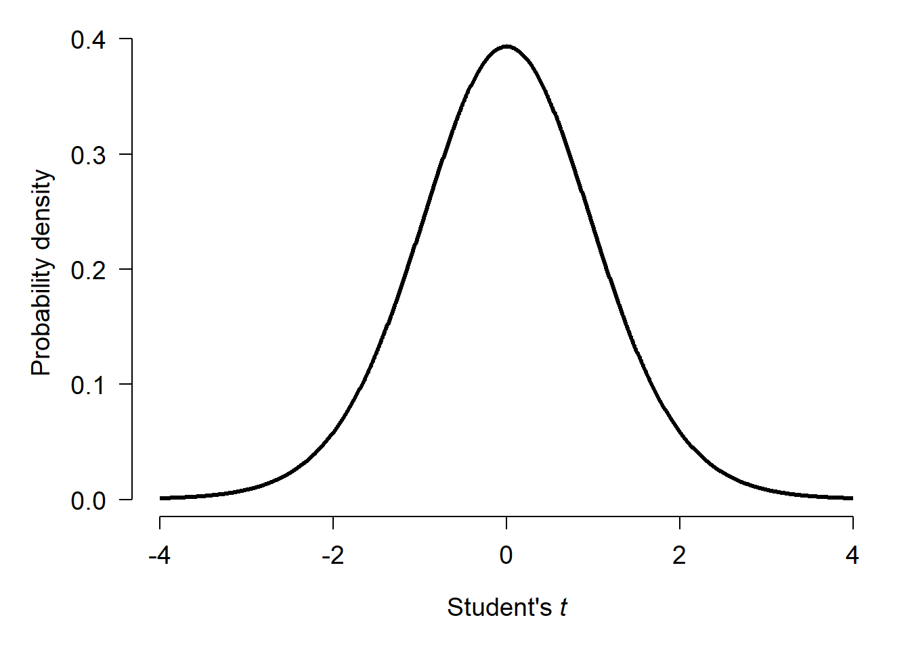
If there was no difference between the means of x1 and x2, then t statistics should cluster around 0 with more extreme values being much less common. Test statistics \(\ge\) 4 or \(\le\) -4 almost never happen.
What about our t statistic, -1.796? The figure below shows how the total possible space of t statistics (given 17.872 d.f.) is partitioned. The total area under this curve, called a “probability density plot”, is equals 1. If you think about it, t must take on a value…so the sum of probabilities for all t is 1. The red area shows the probability of a t occurring randomly that is < -1.796. That is, more extreme than the observed t. But “more extreme” can work the other way too: t could randomly be > 1.796 as well. This probability of this possibility is shown by the blue area. The total of the red and blue areas is the total probability of a t value more extreme than the observed t.
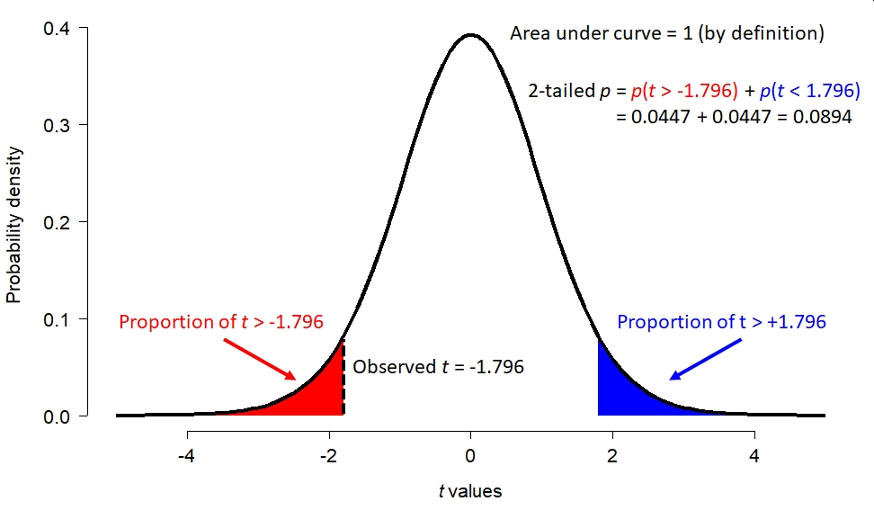
But as we shall see, increasing the sample size can make the same difference appear significant:
set.seed(123)
n <- 1000
mu1 <- 6
mu2 <- 8
sigma <- 3
x1 <- rnorm(n, mu1, sigma)
x2 <- rnorm(n, mu2, sigma)
t.test(x1, x2)##
## Welch Two Sample t-test
##
## data: x1 and x2
## t = -15.485, df = 1997.4, p-value < 2.2e-16
## alternative hypothesis: true difference in means is not equal to 0
## 95 percent confidence interval:
## -2.342319 -1.815705
## sample estimates:
## mean of x mean of y
## 6.048384 8.127396We can also achieve significance by reducing the amount of variation (sigma, or \(\sigma\)). Here variance within each group is expressed as the residual standard deviation (SD). Residual variation is variation not explained by the model (i.e., not related to the difference in means between groups). The SD is the square root of the variance, and is how R expresses the variation in a normal distribution (rnorm()).
set.seed(123)
n <- 10
mu1 <- 6
mu2 <- 8
sigma <- 0.001
x1 <- rnorm(n, mu1, sigma)
x2 <- rnorm(n, mu2, sigma)
t.test(x1, x2)##
## Welch Two Sample t-test
##
## data: x1 and x2
## t = -4486.7, df = 17.872, p-value < 2.2e-16
## alternative hypothesis: true difference in means is not equal to 0
## 95 percent confidence interval:
## -2.001071 -1.999197
## sample estimates:
## mean of x mean of y
## 6.000075 8.000209So, what the P-value in our t-test tells us depends on not just the actual difference, but how variable that difference is and how many times we measure it (metaphorically speaking).
The table below summarizes the results of the three simulations we just ran:
| True difference (\({\bar{x}}_1-{\bar{x}}_2\)) | Residual SD | Sample size | P | Significant? |
|---|---|---|---|---|
| -2 | 3 | 20 | 0.0894 | No |
| -2 | 3 | 2000 | <0.0001 | Yes |
| -2 | 0.001 | 20 | <0.0001 | Yes |
1.4.4 What P-values mean and do not mean
In the simulations above, we know that the true difference was -2 because that is how we programmed the simulations. But the conclusion of the experiments depended on experimental parameters other than the one of interest! For each of the three scenarios above, consider these questions:
- Should the researchers reject the null hypothesis, and conclude that there is a difference between
x1andx2? - Should the researchers accept the null hypothesis, and conclude that there is no difference between
x1andx2? - Should the researchers accept the alternative hypothesis, and conclude that there is a difference between
x1andx2?
The researchers should reject the null hypothesis only in scenarios 2 and 3. In scenario 1, they should not accept the null hypothesis. The correct action is fail to reject the null. Accepting the null hypothesis would imply some certainty that the difference was 0. But that is not what the t-test actually says. What the t-test really says is that a difference (measured as t) between -1.796 and 1.796 is likely to occur about 91% (i.e., 1-P) of the time even if the true difference is 0. In other words, if we repeated the experiment, we would get a \(|t|>1.796\) over 9 times out of 10!
One of the most common misconceptions about P-values is that they represent the probability of the null hypothesis being true, or of the alternative hypothesis being false. Neither of these interpretations is correct. Similarly, many people think that 1 minus the P-value represents the probability that the alternative hypothesis is true. This is also incorrect. Remember:
The P-value is only a statistical summary, and says nothing about whether or not a hypothesis is true.
The P-value is only a statement about how unlikely the result would be if there was no real effect.
A P-value is a purely statistical calculation and says nothing about biological importance or the truth of your hypothesis. Interpreting P-values and other statistical outputs is the job of the scientist, not the computer.
P-values and NHST in general is that each test can only ever make binary distinctions:
- Reject or fail to reject the null.
- True difference is 0 or not 0.
- Difference is \(\ge\) 3 or not \(\ge\) 3.
- And so on.
In each example, each of the two alternatives is the logical negation of the other. But, rejecting one side of each dichotomy is not the same as accepting the other. By analogy, juries in criminal trials in the US make one of two determinations: guilty or not guilty. A verdict of not guilty includes innocent as a possibility, but does not mean we can conclude the defendant is innocent. Likewise, the P-value might help distinguish “difference in means is different from 0 (P < 0.05)” vs. “difference in means is not different from 0 (P \(\ge\) 0.05)”. The latter choice includes a difference in means of 0 as a possibility, but does not actually demonstrate that the value is 0.
1.4.5 Do you need a P-value?
Now that we have a better handle on what a P-value really is, you might be tempted to ask, “Do I need a P-value?” Yes, you probably do. For better or for worse, P-values and NHST are firmly entrenched in most areas of science, including biology. Despite its shortcomings, the NHST paradigm does offer a powerful way to test and reject proposed explanations. This utility means that NHST and P-values are not going away any time soon. The rest of this module will explore some alternatives to NHST.
1.5 Alternatives to NHST
1.5.1 Bayesian inference
Bayesian inference is a framework for evaluating evidence and updating beliefs about hypotheses based on evidence. When conducting Bayesian inference, researchers start with some initial idea about their model system: a prior. They then collect evidence, and update their idea based on the evidence. The updated idea is called the posterior.
- When the prior is strong, or the evidence weak, their ideas will not be updated much and the posterior will be strongly influenced by the prior.
- When the evidence is strong, or the prior weak, the posterior will be updated more and thus less influenced by the prior.
Some researchers prefer to use naïve or uninformative priors, so that their conclusions are influenced mostly by the evidence. Bayesian statistical methods will return essentially the same parameter estimates (e.g., differences in means or slopes) as frequentist methods when uninformative priors are used. This means that almost any traditional statistical analysis can be replaced with an equivalent Bayesian one. The statistical models that are fit, such as linear regression or ANOVA, are the same. All that really changes is how the researcher interprets the relationship between the model and the data.
Bayesian inference depends on Bayes’ theorem:
\[p\left(H|E\right)=\frac{P\left(E|H\right)P\left(H\right)}{P\left(H\right)P\left(E|H\right)+P\left(\lnot H\right)P\left(E|\lnot H\right)}=\frac{P\left(E|H\right)P\left(H\right)}{P\left(E\right)}\]
where
- H is a hypothesis that can be true or false
- \(p\left(H\right)\) is the prior, an estimate of the probability of the hypothesis being true before any new data (E) are observed
- E is evidence, specifically new data used to update the prior
- \(p\left(H|E\right)\) is the probability of H given E. I.e., the probability of the hypothesis being true after new evidence is observed. This is also called the posterior probability.
- \(p\left(E\right)\) is the probability of E regardless of H. I.e., the probability of observing the evidence whether or not the hypothesis is true. \(p\left(E\right)\) is called the marginal likelihood.
- \(p\left(E|H\right)\) is the probability of observing the evidence E given H. I.e., the probability of observing the evidence if the hypothesis is true. \(p\left(E|H\right)\) is also called the likelihood.
Bayes’ theorem is powerful because it is very general. The precise nature of E and H do not matter. All that matters is that one could sensibly define an experiment or set of observations in which E might depend on H and vice versa.
1.5.1.1 Example Bayesian analysis–simple
Imagine you go to the doctor and get tested for a rare condition, Niemann-Pick disease. Your doctor tells you that this disease affects about 1 in 250000 people. Unfortunately, you test positive. But, the doctor tells you not to worry because the test only 99% reliable. Why is the doctor so sanguine, and what is the probability that you have Niemann-Pick disease8?

The probability of having this disease can be estimated using Bayes’ theorem. First, use what you know to assemble the terms:
- The overall incidence is 1 in 250000 people, or 0.0004%. So, the prior probability \(P\left(H\right)\) is 0.000004.
- The probability of a positive test given that you have the disease, \(P\left(E|H\right)\), is 0.99 because the test is 99% reliable.
- The denominator, \(P\left(E\right)\), is a little trickier to calculate. What we need is the unconditional probability of a positive test. This probability includes two situations: either a positive test when someone has the disease, or a positive test when someone doesn’t have the disease. Because of this, the denominator of Bayes rule is often rewritten as:
\[P\left(E\right)=P\left(H\right)P\left(E|H\right)+P\left(\lnot H\right)P\left(E|\lnot H\right)\]
Where \(P\left(\lnot H\right)\) is the probability of H being false (\(\lnot\) means “negate” or “not”). If you think about it, \(P\left(\lnot H\right)\) is just \(1 – P\left(H\right)\), and \(P\left(E|\lnot H\right)\) is just \(1 – P\left(E|H\right)\).
Next, plug the terms into Bayes’ rule:
\[p\left(H|E\right)=\frac{P\left(E|H\right)P\left(H\right)}{P\left(H\right)P\left(E|H\right)+P\left(\lnot H\right)P\left(E|\lnot H\right)}\]
\[p\left(H|E\right)=\frac{\left(0.99\right)\left(0.000004\right)}{\left(0.000004\right)\left(0.99\right)+\left(0.999996\right)\left(0.01\right)}\]
\[p\left(H|E\right)=\frac{0.00000396}{0.01000392}=0.000396\]
That’s not very worrying! In this example, the test evidence can’t overcome the fact that the disease is so rare. In other words, even among people who get a positive test, it’s far more likely that you don’t have the disease but got a false positive than that you have the disease and got a true positive. This is an example of a very strong prior being more influential than the evidence.
There’s an issue with this calculation, though. The prior probability of 0.000004 was based on the assumption that the test was conducted on a random person from the population. Do physicians conduct tests for vanishingly rare diseases on random people? Of course not. Maybe this physician only prescribes this test if they think that there is a 10% chance that you really have the disease. This might be because, in their experience, 10% of people with your symptoms turn out to have the disease. In that case, the calculation becomes:
\[\left(H|E\right)=\frac{\left(0.99\right)\left(0.1\right)}{\left(0.1\right)\left(0.99\right)+\left(0.9\right)\left(0.01\right)}\]
\[p\left(H|E\right)=\frac{0.099}{0.108}=0.916\]
91.6% is a lot more worrying than 0.0004%9. This example shows that the prior probability can have a huge effect on the posterior probability. Below is an R function that will calculate and print out posterior probabilities conditional on a fixed \(P\left(H\right)\) and varying \(P\left(E|H\right)\), or on a fixed \(P\left(E|H\right)\) and varying \(P\left(H\right)\). One and only one of the parameters must have more than 1 value.
test.bt <- function(peh, ph){
if(length(peh)==1){
xl <- "P(H)"
use.x <- ph
} else {
xl <- "P(E|H)"
use.x <- peh
}
y <- (peh*ph)/((peh*ph)+((1-ph)*(1-peh)))
plot(use.x, y, type="l", lwd=3, xlab=xl,
ylab="P(H|E)", xlim=c(0,1),ylim=c(0,1))
}
# example usage:
test.bt(peh=0.9, ph=10^seq(-6, -0.0001, length=100))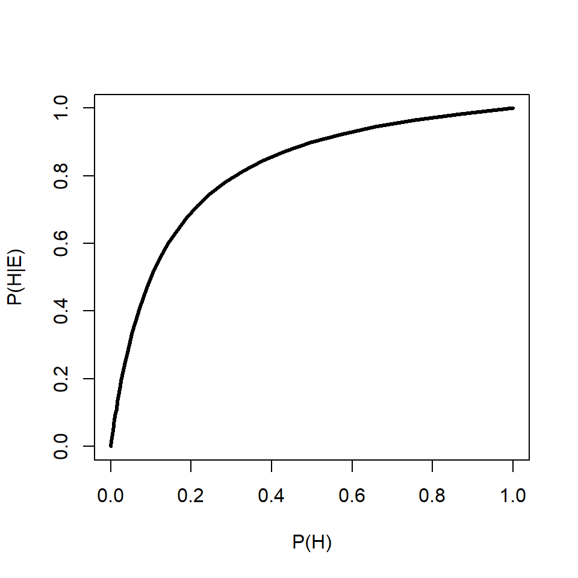
test.bt(peh=1:9/10, ph=0.25)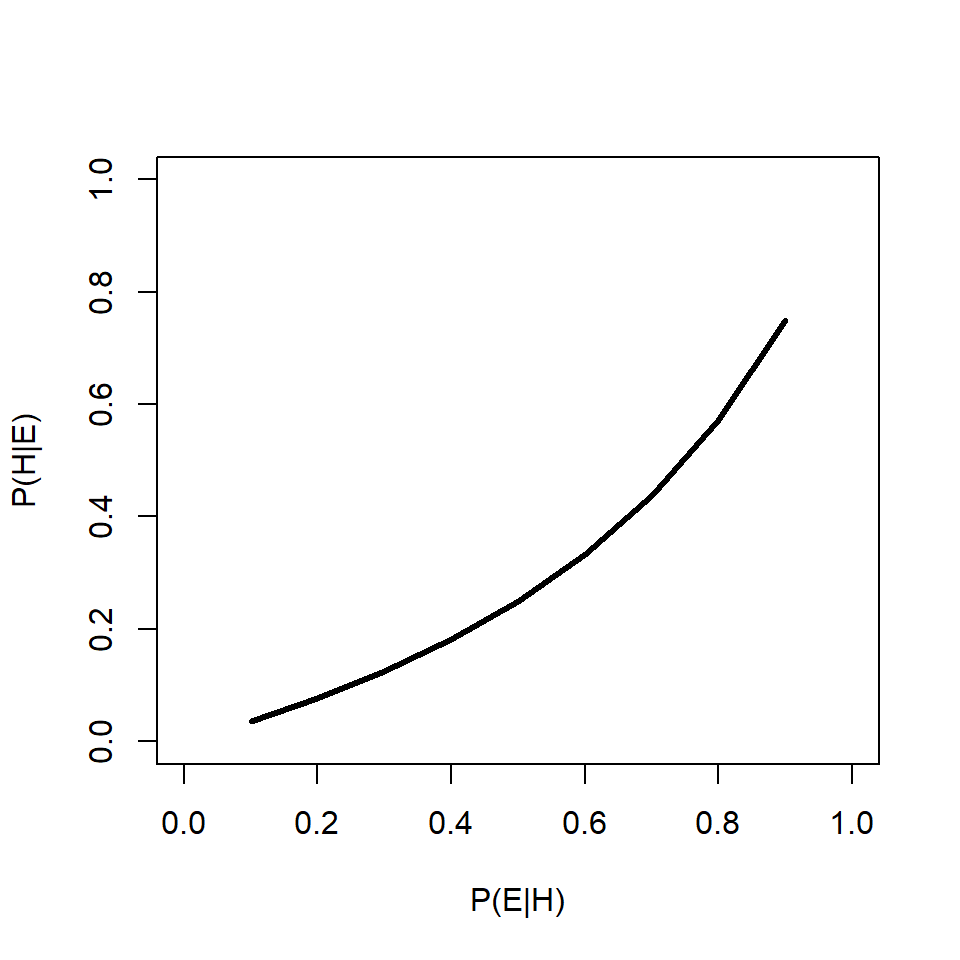
Let’s change the numbers a bit to get a more visual understanding of how this rule is working. Imagine another scenario:
About 24% of US adults are nearsighted10. As of 2019, about 6% of US adults worked in education11. If someone is nearsighted, what is the probability that they work in education?
First, assemble the terms:
- \(P\left(H\right)\), the prior unconditional probability that someone works in education, 6% or 0.06
- \(P\left(E\right)\), the unconditional probability of being nearsighted, or marginal likelihood, is 24% or 0.24.
- \(P\left(E|H\right)\), the probability of a nearsighted educational worker (assuming independence) is 0.24 \(\times\) 0.06 = 0.0144.
We can then calculate \(P\left(H|E\right)\) as:
\[P\left(educator|nearsighted\right)=\frac{P\left(H\right)P\left(E|H\right)}{P\left(H\right)P\left(E|H\right)+\left(1-P\left(H\right)\right)\left(P\left(E\right)\left(1-P\left(H\right)\right)\right)}=0.064\]
This might make sense if we draw the probabilities in rectangle with area = 1. The probability of the hypothesis being true given the evidence collected is the ratio of the probability that the evidence is observed and the hypothesis is true—\(P\left(E|H\right)\)—and the total probability that the evidence is observed at all12
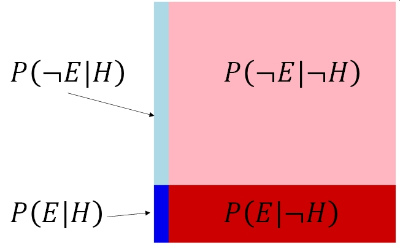
And the critical calculation:
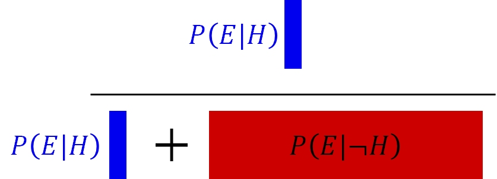
This example was kind of trivial, but what about if the probability of observing the evidence is not the same in each group? What if educators were 10\(\times\) as likely to be nearsighted as other workers? Then the rectangle and calculation would look like this:
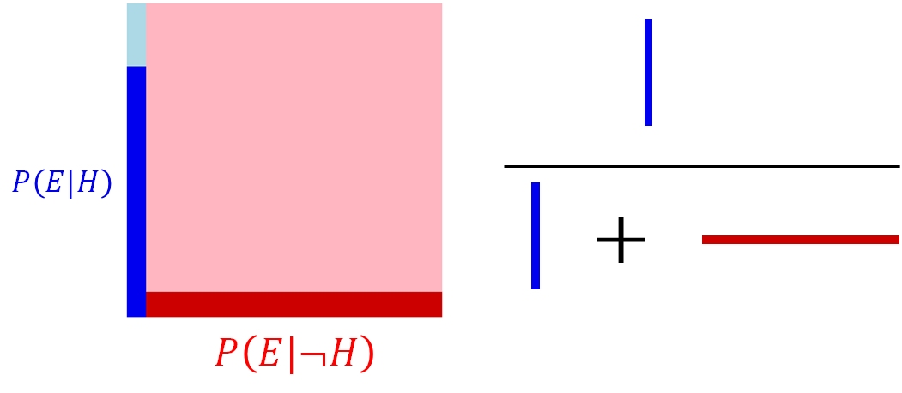
In the second example, the probability that someone is an educational worker given that they are nearsighted is about 38.9%…quite a step up from the first number! This latter example shows the power of the evidence when the evidence is strong. Even though the probability of the posterior seems quite low relative to the space of all possibilities, a Bayesian would evaluate that probability in light of the evidence. The evidence restricts the range of possibilities to the cases where the evidence was actually observed (the darker sections of the rectangles). In the Bayesian framework, the probability associated with the lighter sectors, \(P\left(\lnot E|H\right)\) and \(P\left(\lnot E|\lnot H\right)\), don’t matter because they weren’t observed.
This latter point is one of the key points of difference between a traditional frequentist analysis (i.e., NHST) and a Bayesian analysis. In a frequentist analysis, the evidence is viewed as coming from a random distribution conditional on some true set of model parameters (i.e., on H). In Bayesian inference, the evidence is taken as given, and the model parameters conditional on the the data.
1.5.1.2 Example Bayesian analysis–not so simple
Let’s try another Bayesian analysis, this one not so simple. Usually, a biologist will use Bayesian inference to fit models to biological data, not make trivial calculations about the probability of observing near-sighted college professors (although you could). The example below illustrates how to fit a simple linear regression model using Bayesian inference. We will use the program JAGS, short for Just Another Gibbs Sampler (Plummer 2003), called from R using package rjags (Plummer 2021).
Let’s simulate a dataset for our example analysis:
set.seed(123)
x <- runif(100, 1, 16)
beta0 <- 40 # intercept
beta1 <- -1.5 # slope
sigma <- 5 # residual SD
y <- beta0 + beta1*x + rnorm(length(x), 0, sigma)Next, we need to write the model in the language used by JAGS. JAGS was designed to mostly work with a language developed for an older program for Bayesian modeling called BUGS (Bayesian inference Using Gibbs Sampling) (Lunn et al. 2009). BUGS itself has very similar syntax to R, and for that among other reasons is one of the most popular Bayesian statistics platforms. Both use a technique called Markov Chain Monte Carlo (MCMC) to fit models and sample from the posterior distributions of the parameters. In a nutshell, MCMC works by trying lots of random values in a sequence. At each step, the algorithm randomly changes each parameter. Parameters can change a lot when the model fit is poor, or a little bit when the model fit is good. Eventually the chain of values converges on a set of parameters with good model fit13.
JAGS is a separate program from R that must be installed on your machine. When called from R, JAGS will read a plain text file that contains a model. We will use the sink() command to make that file within R and save it to the home directory.
mod.name <- "mod01.txt"
sink(mod.name)
cat("
model{
# priors
beta0 ~ dnorm(0, 0.001)
beta1 ~ dnorm(0, 0.001)
sigma ~ dunif(0, 10)
tau.y <- 1 / (sigma * sigma)
# likelihood
for(i in 1:N){
y[i] ~ dnorm(y.hat[i], tau.y)
y.hat[i] <- beta0 + beta1 * x[i]
}# i for N
}#model
", fill=TRUE)
sink()This model defines the important parts of a Bayesian model: the priors \(P(H)\) and the likelihood \(P\left(E|H\right)\). JAGS will automatically calculate the other terms for you (it is also calculating the actual probabilities of the priors and likelihood). Notice that the priors are very uninformative, so that the posteriors are driven by the data. For example, for the intercept and slope we assume that they fall somewhere in a normal distribution with mean 0 and variance 1000. That’s a pretty big range. We could also specify something like a uniform distribution with limits ±1000, or ±10000, something even wider. The wider and thus less informative the priors, the more influence the data will have. However, that comes at the cost of longer model run times required to zero in on the right solution.
Next, we must define initial values for the model, package up the data for JAGS, and set the MCMC parameters.
# define initial values for MCMC chains
init.fun <- function(nc){
res <- vector("list", length=nc)
for(i in 1:nc){
res[[i]] <- list(beta0=rnorm(1, 0, 10),
beta1=rnorm(1, 0, 10),
sigma=runif(1, 0.1, 10))
}
return(res)
}
nchains <- 3
inits <- init.fun(nchains)
# parameters to monitor
params <- c("beta0", "beta1", "sigma")
# MCMC parameters
n.iter <- 5e4
n.burnin <- 1e4
n.thin <- 100
# package data for JAGS
in.data <- list(y=y, x=x, N=length(x))Finally we can run the model:
library(rjags)
library(R2jags)
model01 <- jags(data=in.data, inits=inits,
parameters.to.save=params,
model.file=mod.name,
n.chains=nchains, n.iter=n.iter,
n.burnin=n.burnin, n.thin=n.thin)#jags## Compiling model graph
## Resolving undeclared variables
## Allocating nodes
## Graph information:
## Observed stochastic nodes: 100
## Unobserved stochastic nodes: 3
## Total graph size: 414
##
## Initializing model
##
##
|
| | 0%
|
|+++++ | 10%
|
|++++++++++ | 20%
|
|+++++++++++++++ | 30%
|
|++++++++++++++++++++ | 40%
|
|+++++++++++++++++++++++++ | 50%
|
|++++++++++++++++++++++++++++++ | 60%
|
|+++++++++++++++++++++++++++++++++++ | 70%
|
|++++++++++++++++++++++++++++++++++++++++ | 80%
|
|+++++++++++++++++++++++++++++++++++++++++++++ | 90%
|
|++++++++++++++++++++++++++++++++++++++++++++++++++| 100%
##
|
| | 0%
|
|* | 2%
|
|** | 5%
|
|**** | 8%
|
|***** | 10%
|
|****** | 12%
|
|******** | 15%
|
|********* | 18%
|
|********** | 20%
|
|*********** | 22%
|
|************ | 25%
|
|************** | 28%
|
|*************** | 30%
|
|**************** | 32%
|
|****************** | 35%
|
|******************* | 38%
|
|******************** | 40%
|
|********************* | 42%
|
|********************** | 45%
|
|************************ | 48%
|
|************************* | 50%
|
|************************** | 52%
|
|**************************** | 55%
|
|***************************** | 58%
|
|****************************** | 60%
|
|******************************* | 62%
|
|******************************** | 65%
|
|********************************** | 68%
|
|*********************************** | 70%
|
|************************************ | 72%
|
|************************************** | 75%
|
|*************************************** | 78%
|
|**************************************** | 80%
|
|***************************************** | 82%
|
|****************************************** | 85%
|
|******************************************** | 88%
|
|********************************************* | 90%
|
|********************************************** | 92%
|
|************************************************ | 95%
|
|************************************************* | 98%
|
|**************************************************| 100%The most important part of the output is here:
model01## Inference for Bugs model at "mod01.txt", fit using jags,
## 3 chains, each with 50000 iterations (first 10000 discarded), n.thin = 100
## n.sims = 1200 iterations saved
## mu.vect sd.vect 2.5% 25% 50% 75% 97.5% Rhat n.eff
## beta0 39.937 1.084 37.698 39.247 39.941 40.650 41.920 1.001 1200
## beta1 -1.524 0.114 -1.742 -1.598 -1.525 -1.449 -1.293 1.001 1200
## sigma 4.908 0.366 4.236 4.642 4.876 5.140 5.684 1.000 1200
## deviance 600.500 2.511 597.596 598.648 599.891 601.643 606.925 1.001 1200
##
## For each parameter, n.eff is a crude measure of effective sample size,
## and Rhat is the potential scale reduction factor (at convergence, Rhat=1).
##
## DIC info (using the rule, pD = var(deviance)/2)
## pD = 3.2 and DIC = 603.7
## DIC is an estimate of expected predictive error (lower deviance is better).This table shows the posterior distribution of each model parameter: the intercept beta0, the slope beta1, and the residual SD sigma. There is also a measure of model predictive power called deviance. Better-fitting models have smaller deviance. The posterior distributions are given by their mean (mu), SD, and various quantiles. The Rhat statistic (\(\hat{R}\)) is also called the Gelman-Rubin statistic, and helps determine whether or not the model converged. Values of \(\hat{R}\) close to 1 are better (usually <1.001 or <1.01 are desirable, but there is no universally agreed-upon rule).
These parameter estimates are not far off from the true values of 40, -1.5, and 5. Notice that the means of the posterior distributions are close to the values estimated by ordinary linear regression:
summary(lm(y~x))##
## Call:
## lm(formula = y ~ x)
##
## Residuals:
## Min 1Q Median 3Q Max
## -11.1899 -3.0661 -0.0987 2.9817 11.0861
##
## Coefficients:
## Estimate Std. Error t value Pr(>|t|)
## (Intercept) 39.9851 1.0808 37.00 <2e-16 ***
## x -1.5299 0.1139 -13.43 <2e-16 ***
## ---
## Signif. codes: 0 '***' 0.001 '**' 0.01 '*' 0.05 '.' 0.1 ' ' 1
##
## Residual standard error: 4.846 on 98 degrees of freedom
## Multiple R-squared: 0.6479, Adjusted R-squared: 0.6443
## F-statistic: 180.3 on 1 and 98 DF, p-value: < 2.2e-16So why go through all of that Bayesian trouble? There are a few reasons where Bayesian inference might be preferable:
- The model to be fit is very complex. Because the user can specify any model they want, they can fit any model they want.
- Maximum-likelihood methods often require explicit derivations of model likelihoods, whereas an MCMC approach does not. This means that models whose likelihoods have no closed form solution, or computationally difficult solutions, can be estimated more easily with Bayesian methods than maximum likelihood (sometimes).
- The researcher has prior information that they would like to incorporate into the analysis. This can reduce the amount of data needed to reach certain conclusions (see below)14.
- Maximum likelihood methods are not effective in some situations.
- Error propagation is very easy under Bayesian inference (especially MCMC).
- The researcher prefers the philosophy of Bayesian inference.

Bayesian methods are largely beyond the scope of this course, but we will use MCMC in JAGS from time to time to fit complicated models where maximum likelihood doesn’t work so well.
1.5.2 Information-theoretic methods
Another alternative to NHST is information-theoretic (IT) modeling. IT methods borrow insights from information theory to draw conclusions about the extent to which statistical models describe data (Burnham and Anderson 2002). Rather than estimate parameters that minimize a loss function (e.g., residual sums of squared errors) and eliminate variables individually based on P-values, IT methods are used to compare different data models in terms of how much information is lost by using one of the models to represent the underlying process (Hobbs and Hilborn 2006). In other words, NHST arrives at a model by testing individual variables, while IT tests entire models.
There are several types of information criteria in use, but they all boil down to the sum of two terms: one that expresses the likelihood function of the data given the model, and another that penalizes the model for excess complexity (i.e., number of parameters). Information criteria such are used to compare models to each other, not to determine whether any particular model is “significant” or whether any of its terms are significant. For this reason, researchers using IT methods need to be very cautious to avoid overfitting.
The most common information criterion is Akaike’s Information Criterion (AIC) (Burnham and Anderson 2002):
\[AIC=-2L+2K=2K-2\log{\left(\hat{L}\right)}\]
where L is the natural logarithm of the likelihood function (\(\hat{L}\)) and K is the number of parameters in the model. The 2\(\times\) penalty on K makes it so that simpler models are preferred. Without this penalty, the likelihood could be increased simply by adding additional parameters (i.e., by overfitting). The likelihood function is expressed as -2 times its logarithm so that better fits (greater likelihoods) reduce AIC. The logarithm makes this effect nonlinear.
Other information criteria exist, such as the AIC corrected for small sample sizes (\({AIC}_C\)):
\[{AIC}_C=AIC+\frac{2K\left(K+1\right)}{n-K-1}\]
Where n is the number of observations used to fit the model. Exactly what constitutes a “small” sample size is subjective, but Burnham and Anderson (2002) suggest that \({AIC}_C\) should be used when n/K <40. Many other criteria exist, such as QAIC and \({QAIC}_C\) for use when overdispersion in suspected (Lebreton et al. 1992), Bayesian information criterion (BIC) for a more conservative alternative to AIC; and DIC (deviance information criterion) for use in Bayesian contexts.
1.5.2.1 Likelihood?
Before we jump into an example IT data analysis, we also need to understand what a “likelihood” function is. We’ve encountered the term several times in both Bayesian and non-Bayesian contexts. Formally, a likelihood is a function of the probability of observing the data under a particular data model. A data model is an expression of the mathematical relationships between variables; e.g., the linear regression model. When statisticians work with likelihoods, they are usually trying to find the model parameters that maximize the likelihood, or minimize the negative log-likelihood. Likelihoods are related to but not the same thing as probabilities.
1.5.2.2 Example IT analysis
As before, we will simulate a dataset so we know exactly what the results should be. Let’s create a dataset where some outcome y depends on 1 of 3 predictor variables: x1, x2, and x3. To illustrate how AIC can distinguish between models with better or worse predictive power, we’ll make the dependent variable dependent on only one predictor, x1.
set.seed(456)
# sample size
n <- 100
# draw potential predictor variables
x1 <- sample(20:100, n, replace=TRUE)
x2 <- rnorm(n, 45, 10)
x3 <- sample(41:42, n, replace=TRUE)
# model parameters
beta0 <- 3
beta1 <- 3.2
beta2 <- -8
beta3 <- 0.03
sigma <- 5
# "true" model
y <- beta0 + beta1*x1 + rnorm(n, 0, sigma)Next, fit linear regression models (“candidate models”) using different combinations of predictors. You can fit as many models as you like in this part, but should try to restrict the candidate set to those models you really think are viable, realistic hypotheses. Datasets with many predictors can easily generate hundreds or thousands of candidate models by assembling all of the combinations and permutations of different numbers of predictors. Don’t do that.
m00 <- lm(y~1)
m01 <- lm(y~x1)
m02 <- lm(y~x2)
m03 <- lm(y~x3)
m04 <- lm(y~x1+x2)
m05 <- lm(y~x1+x3)
m06 <- lm(y~x2+x3)
m07 <- lm(y~x1+x2+x3)You can inspect these models (e.g., summary(m01)) and see that x1 is always a significant predictor, while x2 and x3 are not. In frequentist terms, we would say that there was no significant effect of x2 or x3 on y because P \(\ge\) 0.05. In IT terms we would say that adding x2 or x3 to the model did not add explanatory power. Those statements are similar, but not quite the same because they use different criteria to infer how the variables are related.
We can compare the models using AIC. The command below will make a data frame holding the name of each model and its AIC.
aic.df <- AIC(m00, m01, m02, m03, m04, m05, m06, m07)
aic.df## df AIC
## m00 2 1145.3398
## m01 3 623.8889
## m02 3 1144.8685
## m03 3 1147.1488
## m04 4 625.6944
## m05 4 624.2252
## m06 4 1146.5993
## m07 5 626.0870What do we do with this? One common approach is to calculate what’s called an AIC weight. This quantity is an estimate of the probability that a model is the best model out of present candidates. This is NOT the same as the probability that a model is correct, or the best of all possible models—only the best out of the current set of candidates. We can calculate AIC weights in R with a few commands:
aic.df$delta <- aic.df$AIC - min(aic.df$AIC)
aic.df$wt <- exp(-0.5*aic.df$delta)
aic.df$wt <- aic.df$wt/sum(aic.df$wt)
aic.df <- aic.df[order(-aic.df$wt),]
aic.df## df AIC delta wt
## m01 3 623.8889 0.0000000 3.870182e-01
## m05 4 624.2252 0.3362974 3.271187e-01
## m04 4 625.6944 1.8055142 1.569166e-01
## m07 5 626.0870 2.1981493 1.289464e-01
## m02 3 1144.8685 520.9796540 2.873670e-114
## m00 2 1145.3398 521.4509418 2.270378e-114
## m06 4 1146.5993 522.7103962 1.209514e-114
## m03 3 1147.1488 523.2599265 9.189293e-115In this example, the model with the smallest AIC—and thus greatest AIC weight—was model 1 (the correct model). Interestingly, models 4 and 5 had \(\Delta\)AIC <2, which is usually interpreted as not being distinguishable from the best-supported model. This shouldn’t be surprising, because models 4 and 5 also included the true predictor x1. Model 7, which also included x3, was nearly as good but with a \(\Delta\)AIC \(\ge\) 2 we can exclude it. Notice that the worst-supported models (2, 0, 6, and 3) were the models that did not include the true predictor x1.
One key advantage of the IT framework is that it focuses less on P-values and permits the consideration of multiple hypotheses at once. If competing hypotheses can be expressed as a different statistical model (like in the example above), then an information criterion can be used to estimate which hypothesis is best supported by the data (although not necessarily whether any of them is correct). Another key advantage is that it allows averaging parameter estimates across multiple models. This allows researchers to say something about the effect of a factor without concluding exactly which statistical model is the correct one. Essentially, the weighted mean of parameter estimates across the models is calculated. The AIC weights are used to weight the mean:
res.list <- list(m01, m05, m04, m07)
x1.ests <- sapply(res.list, function(x){x$coefficients["x1"]})
x1.ests## x1 x1 x1 x1
## 3.232883 3.234502 3.231263 3.233119weighted.mean(x1.ests, aic.df$wt[1:4])## [1] 3.233189Not too far off from the true value of 3.2!
We’ll use an IT model selection approach occasionally in this class. While the example above was easy and relatively straightforward, there are some important caveats to using AIC and similar methods:
- Information criteria are only a measure of relative model performance, not model correctness or overall goodness of fit.
- Information criteria are only interpretable for sets of nested models: models that can be transformed to each other by setting one or more coefficients to 0.
- Rules-of-thumb about information criteria are just as arbitrary as the P < 0.05 criterion.
- Not every information criterion can be used in every situation. Read the friendly manual.
- IT methods are vulnerable to overfitting because they evaluate entire models, not individual variables. Researchers must think carefully about what variables to include.
1.5.3 Machine learning
The last alternative to NHST that we’ll explore in this class is machine learning (ML). ML is a huge and rapidly growing field of methods for extracting patterns from complex datasets. Many of these methods bear little resemblance to traditional statistics15.

There are too many ML algorithms out there to even begin to cover here, but they all have the same underlying philosophy: ML builds a model on a sample of the data, called the “training data”, and refines or improves the model based on its ability to predict additional “test data” that were not used in the model building process.
This strategy has some considerable advantages over traditional frequentist and Bayesian statistics. In those paradigms, researchers must specify a data model ahead of time and then test how well the data support that model. Specifying a data model makes many assumptions about the distribution of the response variable, the shape of the relationship between the variables (e.g., linear vs. curved vs. stepped), the relationships between predictors, and so on. ML usually makes no such assumptions. Instead, the model is treated as a “black box” that takes in input and spits out predictions. Researchers using ML methods typically don’t worry about or even try to interpret the inner workings of the black box. Those inner workings are often nonsensical to humans anyway. Instead, users of ML report and interpret the predictions of their models and different measures of predictive accuracy.
The disadvantages of ML compared to traditional statistics are also considerable. By not specifying a data model, researchers must assume that their training data are representative of the process they are trying to model. There’s an old saying in statistics and modeling: “Garbage in, garbage out.” If training data are not appropriate, or if there really is no relationship between the predictor variables and the response variable, there is no guarantee that a ML algorithm won’t find one anyway (this is similar to how traditional statistics sometimes get false positives). It’s still up to the researcher to interpret the patterns that the ML method detects and think long and hard about whether those patterns are reasonable.
Other disadvantages of ML are more practical. Most ML techniques require a lot of computing power, that may not be feasible for very large datasets for some researchers. ML techniques are also not standard practice in most fields of science, so researchers wanting to use ML will need to do extra work to show to editors and reviewers that their methods are legitimate and appropriate to their question. ML techniques are not as widely implemented in software packages as traditional statistical methods, and are not as well documented. This means that you will have fewer choices for what software to use and fewer places to get help. Finally, ML techniques can be easy to use but the details can be very hard to understand. As with any data analysis method, it is very easy to get yourself stuck or get into trouble using a technique you only partially understand.
I won’t include an example ML analysis here but can point you to some resources. For ecologists, De’ath (2007) and Elith et al. (2008) are the standard references. Elith et al. (2008) also points to an online source for some R functions that simplify the process (Elith and Leathwick 2017). Tarca et al. (2007) provided an early review for biology in general. Jones (2019) reviewed some applications of ML in cell biology. ML methods are being applied to problems that are not amenable to traditional statistics, particularly image analysis (Kan 2017, Whytock et al. 2021).